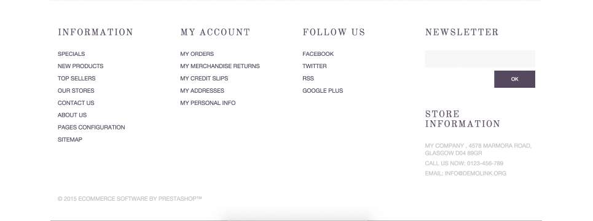

Components Library
Header

Target audience
Hair extensions are a tedious craft that requires additional extensive training and much industry experience to know what and how to buy hair extensions. This hair extension website’s target market consists of licensed cosmetologists with an established clientele, and is very comfortable making hair extension purchases even online. The consumer will primarily be female licensed cosmetologists/hairstylists between the ages of 35-40. The high cost of hair extensions may suggest that the cosmetologists has an established clientele and will be between middle to upper-middle class.
Client/User needs
Seeing the navigation links in the global header, the client’s goal is customer service. Providing an easy way to access the information and products the user is looking for the higher the probability of repeat business. The user will know specifically what they are looking to purchase and generally need to find it fast and finally to purchase it.
Critique
The hair extension website’s choice of a classic white background, ample white space, and minimalist style navigation and utility navigation is a sure way to minimize distraction, find information quickly, and without much effort. The sans-serif font thin type reinforces the modern style without feeling stale and harsh. This modern and effective header always looks sharp and with just enough detail to show how less is absolutely more.
VIEW COMPONENT
CTA (Call To Action)

Target audience
This is a tool to help create websites without knowledge of code. This could suggest the target audience will be male between the ages of 25-35 years old. Since this is a tool for website designing without code, these males will be working in the graphic and web design field. The above-average price to gain access to this tool ($96) may indicate a middle to upper-middle class status.
Client/User needs
Client’s goal is to increase their community outreach and raise funds for their web based application. The client is getting the community of designers to contribute funds in exchange for early access and news about their application. The user wants information in the form of updates and progress. They want to know the project development is using their funds appropriately and in accordance to their agreements.
Critique
The neutral tones give this landing page a solid/grounded feel. This is important when asking for financial support when a product is not a finished product or one the consumer can just download or take home. The words “JOIN THE EVOLUTION” brings a sense of community, togetherness, and brotherhood for a greater cause for everyone; it is the natural way to go, so to speak. The accent gold color (millennial reference?) makes the web application seem more valuable and thus increase the desire for the product. More Value = More desire.
view component
Grid Menu

Target audience
A website for sports apparel the target audience would be young athletic males between the ages of 13-30 years old. Having professional sports players in the photos to promote the brand indicate users play on a team for school and are doing so competitively and also suggests the users come from low-middle to upper-middle class families.
Client/User needs
With links to more information and no purchasing option visible, I believe the clients goal is customer service; Communicating information to the user about the array of sports apparel in order to receive feedback in regards to these products and services. The user is looking for information to help make a sports apparel purchase for the coming sports season.
Critique
This site’s creative use of grass as a background texture seen between each box within the grid of equals is subtle and smart. Having the brand name associated with all the products is a great way to continue driving home the brand recognition campaign. This site keeps their modern approach clean with contrasting grey tone variations so that the only pop of color you see are the ones coming from the apparel worn by the athletes themselves promoting their intended function and allows the user to see themselves in their place. A sans-serif font in a mid-tone gray for the brand’s name remains consistent as well as the adjoining product category remains the same rich black to accentuate the type of products you will find when you click into that box.
view component
About us

Target audience
Designed as a creative studio website the target market would be primarily males between the ages of 35-40. The user would own a small business and would be looking to expand his efforts to meet the demands of today’s market and get his business more recognition online.
Client/User needs
The client’s goal is customer service. The client wants to provide the user with ways to contact them. The user will be looking to contact candidates by the easiest methods. Assuming the next step is to make a sale, the client will direct the user to a form to submit a project inquiry.
Critique
The composition is a simple design, with a monochromatic color palette. A smart move by incorporating their actual photos to give it a humanistic touch; a more literal interpretation of the phrase “People want to do business with people.” The transparent overlays show that they are transparent and have nothing to hide and to back that statement up; they provide links to their social media account right after their micro bio.
view component
Skills
Target audience
Designed as a creative studio portfolio website the target market is a start-up business looking to establish a brand and an online presence. The user handling the process will be inquisitive and want to see qualifications and level of skill.
Client/User needs
The client uses skill bars, signature line, and word choice in the heading that the goal is to provide information to the user of the levels and sets of skills they offer. User will be looking for information that helps align his goals with the skills and expertise of the company he finds.
Critique
The information is well organized; typography has an established hierarchy by color, weight, location, and spacing. A subtle but effective use of accent color to point out the most important elements: Title and areas of skill and their level of mastery.
view component
Feature highlight
Target audience
This is a tool to help create websites without knowledge of code. I propose the target market will be male between the ages of 25-35 years old. The users will be working in the graphic and web design fields struggling with creating new designs or solutions for their clients. The above-average price to gain access to this tool ($96) may indicate a middle to upper-middle class income level.
Client/User needs
From the photo and caption the clients goal is to increase sales by making comparisons to what the clients product is impeccable at doing and what it can do for the user and compares it to what the competitors product does but fails to achieve. The user will need some way to judge businesses side by side in order to make a final decision.
Critique
Reading about how one competitor trumps where the other fails is a great way for the user to make a choice. Doing so in a somewhat “fair” way gives the client much more credibility. The ALL-CAPS-titles & headers and Sentence-case body copy highlight the information Architecture with ease. The earthy tones give a grounded and balanced feel to the composition. Diagonal lines moving from bottom-left to top-right proposes a sense of motion; moving forward in the right direction (in countries like the U.S. where we read left to right).
view component
Content Rotator

Target audience
A Jewish school site’s target audience would typically be male fathers between the ages of 30-45 years old and locals of the community the school resides in.
Client/User needs
The sites event rotator content suggests the clients goal is to establish itself as a credible and reliable resource where children can only benefit and grow from their educators and their curriculum. The user is seeking out the quality of information output from potential choices to help determine if a candidate school is the right fit for his child/children.
Critique
The corporate color scheme used in this composition gives off a sense of being official/professional/corporate. The title in ALL-CAPS with a symbol that slightly contrasts with the background can symbolize an authoritative figure. The over use of sharp corners and box look resembles conformity and can imply rigidity and strict behavior.
view component
Testimonials Slider
Target audience
Designed, as a User experience prototyping site the target audience is a business looking to find a solution to problem that can be solved using a prototyping tool that is interactive and easy for teams to use even if they are not in the same room.
Client/User needs
The testimonial slider coupled with the list of clients suggests the client’s goal is to establish credibility and reliability of their product. The user needs to find information to validate the claims a potential business choice is giving about their solution.
Critique
A minimalistic design is the way to go. Keeping any design fluff and unnecessary material from this portion is critical to gaining the users trust and ultimately their business. The mid gray color for the company logos displayed are enough to easily read and distinguish but gives the focus to the full color photo of the individual who submitted a testimonial. This implies the importance of the individual over the brand; the individual experiences drive the business forward. The bold black sans-serif text of the modern style testimonial takes center stage with its contrast with the white background separations dictated with the ample whitespace surrounding each element.
view component
Newsletter Sign-Up

Target audience
Designed as a hair salon website the target audience is female locals between the ages of 30 -40. The newsletter feature might suggest that the user has more leisure time for reading and events (i.e., house wife, stay-at-home mom, etc.) and could signify user income class is at least middle to upper class status.
Client/User needs
With a newsletter sign-up call to action, the client’s goal is customer service and community outreach. Communicating information on the newest hair products, events, and special promotions, allowing the users to spread and share that information to like-minded friends. On the other hand, users will be seeking out information for hair-related services and products. No call to action suggests that with the submission of the user email, client will provide the opportunities to schedule a consultation or to purchase products.
Critique
This newsletter sign-up component is done right. Crisp and well placed shapes with descending size in three shades from light to dark forces the eye to gradually read the text, lets the user visualize themselves as a glamorous super model, and finally to the submission of the users email to “acquire” such beautiful results can be an email away… smart, effective, beautiful. A monochromatic palette, black and white photo play with the elegant style in a modern environment. A single input field for a newsletter sign-up is effortless with autocomplete: automatic.
view component
Footer

Target audience
Designed, as a User experience prototyping site the target audience is a business looking to find a solution to problem that can be solved using a prototyping tool that is interactive and easy for teams to use even if they aren’t in the same room.
Client/User needs
A list of links at the bottom of the page shows the clients goal is to increase sales and customer service. Showing the user what all comes with choosing their solution and doubles as an authoritative resource on the subject matter.
Critique
An organized list of links in a grid-like fashion and dark-background-color is appropriate for footer with smaller font-sizes for texts, and links to keep the users focus on the content above the footer. The footer is joined with the links to any legal documents and resources and a contact us feature to increase the opportunities for user engagement.
view component